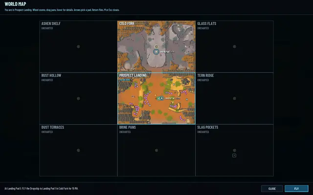
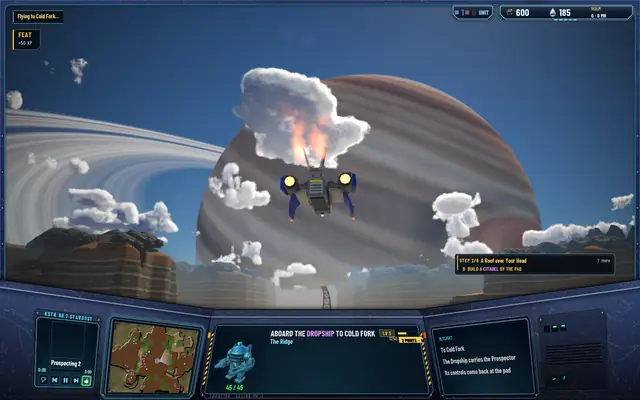
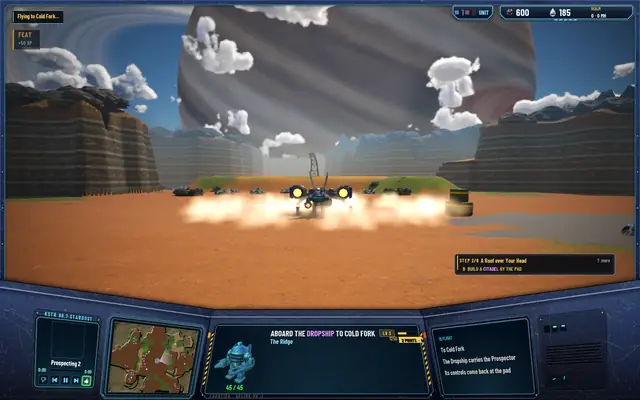
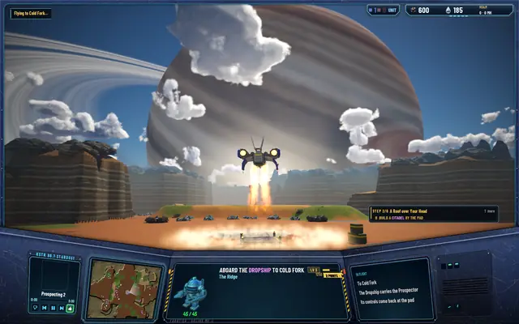
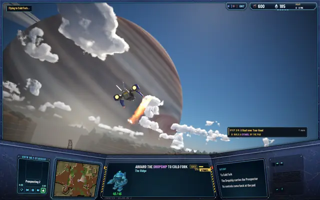
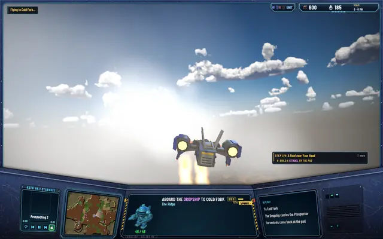
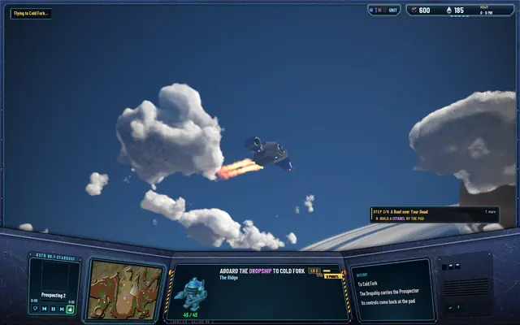
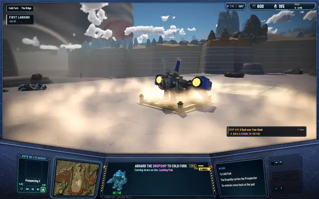
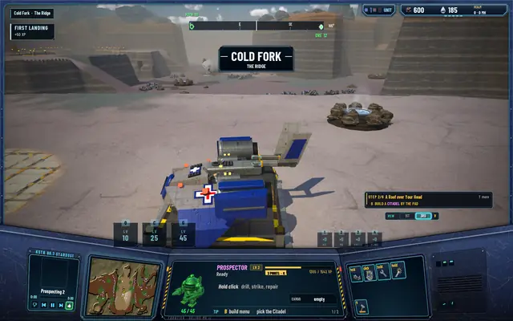

The Dropship: no more flying alone
The Prospector used to jump from pad to pad on its own. I wanted a ship to carry it instead, and now one does: you build a Landing Pad, call the Dropship, walk up its ramp and watch the flight to the other side of the world, with no loading screen and no fade.

Landing Pads
Flights go only between Landing Pads that pilots have built, and only to regions you've already been to. A Landing Pad is a building from level 1: its blueprint is 80 ore at the Citadel's shop and it costs 60 ore to build. A region can have two, and like every building they're the realm's, so any pilot uses any pad. The pads in the region files are where new pilots arrive; nobody flies to those.
A flight costs 10 MH plus 5 for each step across the map's grid, so 15 MH to the next region over. From a Spacedock, the big pad, it costs half. With the Ringwalker skill it's free and 30% faster. The old Homing beacon skill, which flew you home, is retired: pilots who had it get their points back and a Landing Pad blueprint.
The flight
Stand on a pad and press M to pick the pad you're going to. The Dropship comes down onto your pad, seen from a low camera, and the Prospector walks up its ramp. It lifts off in a ring of dust, banks twice with the ringed giant filling the sky, dashes through streaking cloud, swings wide onto the target pad, and you step out. The whole trip is 16 to 20 seconds; a longer trip only makes the dash longer.
The change of region happens during the approach, and drawing it takes 1.6 ms. Frames through the whole flight run 10.8 ms at the median and 12.2 ms at the 95th percentile.
Prospect Landing to Cold Fork

On a pad, M: Landing Pad 1 in Cold Fork, for 15 MH.
The Dropship comes down.
Boarding.
Lift-off in a ring of dust.
Banking under the giant.
The dash, through cloud.
The wide approach.
Down on the pad in Cold Fork.
Stepped out: Cold Fork.


What isn't right yet
The first call in a session still stalls once, for 522 ms, the first time the ship is drawn. That's in the editor build; it hasn't been checked in a packaged one yet.
Every test suite passes: 496 core, 254 server and 85 network.